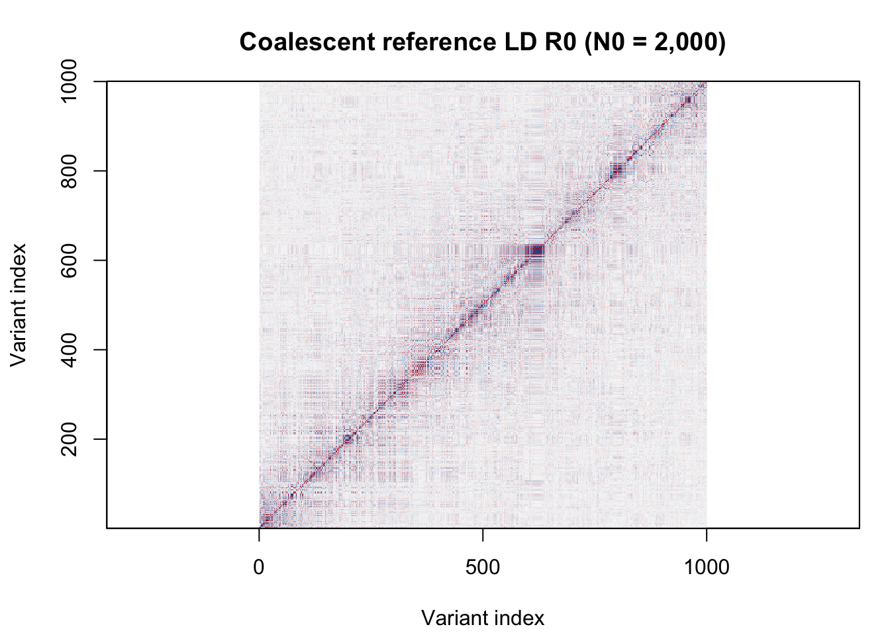
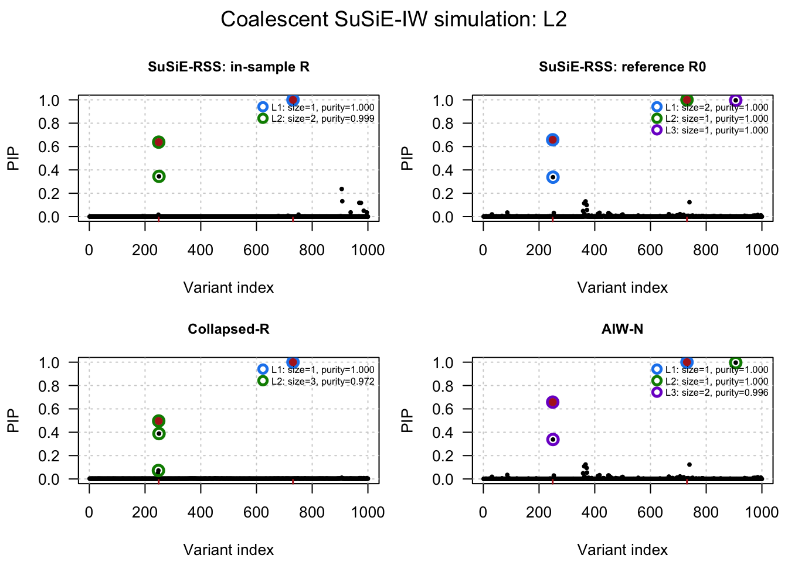
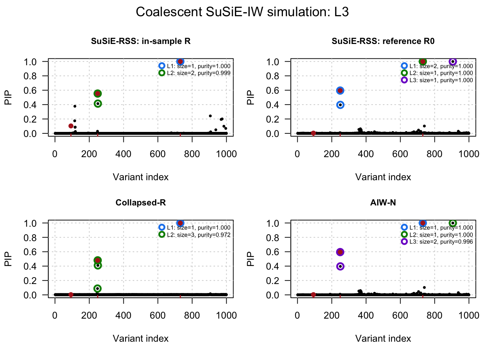

Last updated: 2026-08-20
Checks: 7 0
Knit directory: susie-IW/
This reproducible R Markdown analysis was created with workflowr (version 1.7.2). The Checks tab describes the reproducibility checks that were applied when the results were created. The Past versions tab lists the development history.
Great! Since the R Markdown file has been committed to the Git repository, you know the exact version of the code that produced these results.
Great job! The global environment was empty. Objects defined in the global environment can affect the analysis in your R Markdown file in unknown ways. For reproduciblity it’s best to always run the code in an empty environment.
The command set.seed(20260820) was run prior to running
the code in the R Markdown file. Setting a seed ensures that any results
that rely on randomness, e.g. subsampling or permutations, are
reproducible.
Great job! Recording the operating system, R version, and package versions is critical for reproducibility.
Nice! There were no cached chunks for this analysis, so you can be confident that you successfully produced the results during this run.
Great job! Using relative paths to the files within your workflowr project makes it easier to run your code on other machines.
Great! You are using Git for version control. Tracking code development and connecting the code version to the results is critical for reproducibility.
The results in this page were generated with repository version e430a95. See the Past versions tab to see a history of the changes made to the R Markdown and HTML files.
Note that you need to be careful to ensure that all relevant files for
the analysis have been committed to Git prior to generating the results
(you can use wflow_publish or
wflow_git_commit). workflowr only checks the R Markdown
file, but you know if there are other scripts or data files that it
depends on. Below is the status of the Git repository when the results
were generated:
Ignored files:
Ignored: .DS_Store
Ignored: analysis/.DS_Store
Ignored: experiments/.DS_Store
Ignored: plos-paper/
Note that any generated files, e.g. HTML, png, CSS, etc., are not included in this status report because it is ok for generated content to have uncommitted changes.
These are the previous versions of the repository in which changes were
made to the R Markdown
(analysis/02-coalescent-IW-simulation.Rmd) and HTML
(docs/02-coalescent-IW-simulation.html) files. If you’ve
configured a remote Git repository (see ?wflow_git_remote),
click on the hyperlinks in the table below to view the files as they
were in that past version.
| File | Version | Author | Date | Message |
|---|---|---|---|---|
| Rmd | e430a95 | dodat-stats | 2026-08-20 | Add SuSiE-IW analyses and experiment results |
This page records the collaborator-facing coalescent SuSiE-IW
simulation for two and three causal effects. Reference LD is generated
with stdpopsim and msprime; in-sample LD and
marginal associations are then generated under the SuSiE-IW model.
Execution requires the coalescent Python dependencies and runs during
ordinary workflowr builds. Set run_analysis: false in the
YAML header to skip the complete simulation.
release_dir <- if (file.exists("01-collapsed-R.R")) {
"."
} else {
"code"
}
source(file.path(release_dir, "01-collapsed-R.R"))
source(file.path(release_dir, "02-AIW-and-AIW-N.R"))
source(file.path(release_dir, "03-SER-fallback-and-plot.R"))
# -------------------------------------------------------------------------
# Settings used in the manuscript's coalescent SuSiE-IW experiment
# -------------------------------------------------------------------------
seed <- 7L
J <- 1000L
N0 <- 2000L # reference-panel sample size
coalescent_sample_size <- 2000L # second population used for common-SNP QC
N <- 200000L # GWAS sample size
true_eta0 <- 200
h2 <- 1e-3
true_lambda <- 1e-3
true_L_values <- c(2L, 3L)
maximum_fitted_L <- 5L
lambda_grid <- c(1e-5, 1e-4, 1e-3, 2e-3, 4e-3, 6e-3, 8e-3, 1e-2)
collapsed_eta0_multiplier <- 1.677
aiwn_eta0_multiplier <- 1.424
# -------------------------------------------------------------------------
# 1. Generate empirical reference LD R0 from a human coalescent model
# -------------------------------------------------------------------------
simulate_coalescent_R0 <- function(
J, N0, second_population_size = N0, seed = 1L,
chromosome = "chr22", start = 20e6, end = 21e6,
split_time = 10L) {
if (!requireNamespace("reticulate", quietly = TRUE)) {
stop("Install the R package reticulate")
}
if (!nzchar(Sys.getenv("RETICULATE_PYTHON"))) {
python <- Sys.which("python3")
if (nzchar(python)) {
Sys.setenv(RETICULATE_PYTHON = python)
reticulate::use_python(python, required = FALSE)
}
}
stdpopsim <- reticulate::import("stdpopsim")
msprime <- reticulate::import("msprime")
species <- stdpopsim$get_species("HomSap")
contig <- species$get_contig(
chromosome, left = as.integer(start), right = as.integer(end)
)
demography <- msprime$Demography()
demography$add_population(name = "ANC", initial_size = 20000L)
demography$add_population(name = "POP1", initial_size = 100000L)
demography$add_population(name = "POP2", initial_size = 100000L)
demography$add_population_split(
time = as.integer(split_time),
derived = list("POP1", "POP2"), ancestral = "ANC"
)
models <- list(
msprime$DiscreteTimeWrightFisher(duration = 100L),
msprime$StandardCoalescent()
)
tree_sequence <- msprime$sim_ancestry(
samples = reticulate::dict(
POP1 = as.integer(second_population_size),
POP2 = as.integer(N0)
),
demography = demography,
recombination_rate = contig$recombination_map,
model = models,
random_seed = as.integer(seed)
)
tree_sequence <- msprime$sim_mutations(
tree_sequence, rate = 1.29e-8, random_seed = 1L
)
population_ids <- list()
for (population in reticulate::iterate(tree_sequence$populations())) {
population_ids[[population$metadata$name]] <- population$id
}
genotype_haploid <- tree_sequence$genotype_matrix()
to_diploid <- function(sample_ids) {
columns <- as.integer(sample_ids) + 1L
haplotypes <- genotype_haploid[, columns, drop = FALSE]
genotypes <- haplotypes[, seq(1L, ncol(haplotypes), by = 2L)] +
haplotypes[, seq(2L, ncol(haplotypes), by = 2L)]
t(genotypes)
}
genotype_1 <- to_diploid(tree_sequence$samples(
population = as.integer(population_ids$POP1)
))
genotype_0 <- to_diploid(tree_sequence$samples(
population = as.integer(population_ids$POP2)
))
frequency_1 <- colMeans(genotype_1) / 2
frequency_0 <- colMeans(genotype_0) / 2
common <- frequency_1 > 0.05 & frequency_1 < 0.95 &
frequency_0 > 0.05 & frequency_0 < 0.95
genotype_1 <- genotype_1[, common, drop = FALSE]
genotype_0 <- genotype_0[, common, drop = FALSE]
if (ncol(genotype_0) < J) {
stop("The coalescent region contains fewer than J common variants")
}
# Use the same seeded contiguous-block selection as the manuscript study.
set.seed(seed)
first_column <- if (ncol(genotype_0) == J) {
1L
} else {
sample.int(ncol(genotype_0) - J + 1L, 1L)
}
columns <- first_column + seq_len(J) - 1L
R0 <- stats::cor(genotype_0[, columns, drop = FALSE])
R0 <- (R0 + t(R0)) / 2
diag(R0) <- 1
R0
}
R0 <- simulate_coalescent_R0(
J = J, N0 = N0, second_population_size = coalescent_sample_size,
seed = seed
)
# Plot the reference LD with a fixed color scale so heatmaps from different
# panel sizes or seeds are comparable.
old_par <- graphics::par(mar = c(4.2, 4.2, 3.2, 1.2))
ld_colors <- grDevices::colorRampPalette(
c("#2166AC", "#F7F7F7", "#B2182B")
)(201L)
graphics::image(
x = seq_len(J), y = seq_len(J), z = R0,
zlim = c(-1, 1), col = ld_colors, useRaster = TRUE,
asp = 1, xlab = "Variant index", ylab = "Variant index",
main = sprintf("Coalescent reference LD R0 (N0 = %s)",
format(N0, big.mark = ","))
)
graphics::box()
graphics::par(old_par)
# -------------------------------------------------------------------------
# 2. SuSiE-IW draw: R | R0
#
# Rbar_true = (1 - true_lambda) R0 + true_lambda I,
# R_raw ~ IW_J(true_eta0 Rbar_true, true_eta0 + J + 1),
# R = cov2cor(R_raw).
# -------------------------------------------------------------------------
Rbar_true <- (1 - true_lambda) * R0 + true_lambda * diag(J)
set.seed(2000000L + 10000L * seed + J + as.integer(true_eta0))
precision <- stats::rWishart(
1L,
df = true_eta0 + J + 1L,
Sigma = solve(true_eta0 * Rbar_true)
)[, , 1L]
R <- stats::cov2cor(solve(precision))
R <- (R + t(R)) / 2
diag(R) <- 1
# Pick three separated, weak-LD variants. The L=2 architecture uses the first
# two; the L=3 architecture adds the third, so the architectures are nested.
choose_nested_weak_ld_variants <- function(R) {
candidates <- unique(as.integer(round(seq(
max(2, 0.08 * nrow(R)), min(nrow(R) - 1, 0.92 * nrow(R)),
length.out = min(250L, nrow(R) - 2L)
))))
minimum_separation <- max(8L, floor(nrow(R) / 12))
first <- candidates[which.min(abs(candidates - round(nrow(R) / 4)))]
available <- candidates[abs(candidates - first) >= minimum_separation]
second <- available[which.min(abs(R[first, available]))]
available <- candidates[
abs(candidates - first) >= minimum_separation &
abs(candidates - second) >= minimum_separation
]
third <- available[which.min(vapply(available, function(j) {
max(abs(R[j, c(first, second)]))
}, numeric(1L)))]
c(first, second, third)
}
causal_candidates <- choose_nested_weak_ld_variants(R)
# Use one shared noise draw so that the L=2 and L=3 examples differ only in b.
set.seed(2500000L + 10000L * seed + J + as.integer(true_eta0))
noise <- as.numeric(t(chol(R)) %*% stats::rnorm(J)) / sqrt(N)
# -------------------------------------------------------------------------
# 3. Generate beta and v | R, beta for L_true = 2 or 3
#
# beta is proportional to (7,5) or (7,5,3), then scaled so beta' R beta=h2.
# v | R,beta ~ N_J(R beta, R/N).
# -------------------------------------------------------------------------
simulate_architecture <- function(true_L) {
stopifnot(true_L %in% c(2L, 3L))
causal <- causal_candidates[seq_len(true_L)]
weights <- c(7, 5, 3)[seq_len(true_L)]
scale <- sqrt(
h2 / drop(crossprod(
weights, R[causal, causal, drop = FALSE] %*% weights
))
)
beta <- numeric(J)
beta[causal] <- scale * weights
v <- as.numeric(R %*% beta + noise)
list(
true_L = true_L,
causal = causal,
beta = beta,
v = v,
causal_LD = R[causal, causal, drop = FALSE],
expected_z = sqrt(N) * as.numeric(
R[causal, , drop = FALSE] %*% beta
)
)
}
simulation_L2 <- simulate_architecture(2L)
simulation_L3 <- simulate_architecture(3L)
simulations <- list(L2 = simulation_L2, L3 = simulation_L3)
# -------------------------------------------------------------------------
# 4. Fit the four manuscript methods
# -------------------------------------------------------------------------
fit_architecture <- function(simulation) {
v <- simulation$v
list(
susie_in_sample = fit_susie_rss(
v = v, R = R, N = N, L = maximum_fitted_L
),
susie_reference = fit_susie_rss(
v = v, R = R0, N = N, L = maximum_fitted_L
),
collapsed_R = susie_iw(
v = v, R0 = R0, N = N, L = maximum_fitted_L,
lambda_grid = lambda_grid,
eta0_multiplier = collapsed_eta0_multiplier,
scaled_prior_variance = 0.2,
estimate_prior_variance = TRUE,
coverage = 0.95, min_abs_corr = 0.5,
ser_fallback = TRUE,
max_iter = 200L, tol = 1e-4, verbose = FALSE
),
AIW_N = suppressMessages(susie_aiw(
v = v, R0 = R0, N = N, L = maximum_fitted_L,
approximation = "N",
lambda_grid = lambda_grid,
eta0_multiplier = aiwn_eta0_multiplier,
scaled_prior_variance = 0.2,
estimate_prior_variance = TRUE,
coverage = 0.95, min_abs_corr = 0.5,
ser_fallback = TRUE,
max_iter = 500L, tol = 1e-3, verbose = FALSE
))
)
}
fits_L2 <- fit_architecture(simulation_L2)
fits_L3 <- fit_architecture(simulation_L3)
fits <- list(L2 = fits_L2, L3 = fits_L3)
summarize_architecture <- function(label, simulation, fitted_methods) {
table <- do.call(rbind, Map(function(method, fit) {
row <- summarize_iw_fit(fit, causal = simulation$causal)
row$architecture <- label
row$method <- method
row
}, names(fitted_methods), fitted_methods))
rownames(table) <- NULL
table[, c("architecture", "method",
setdiff(names(table), c("architecture", "method")))]
}
summary_table <- rbind(
summarize_architecture("L_true = 2", simulation_L2, fits_L2),
summarize_architecture("L_true = 3", simulation_L3, fits_L3)
)
print(summary_table, row.names = FALSE, digits = 4) architecture method selected_lambda raw_eta0 eta0_used model_L
L_true = 2 susie_in_sample NA NA NA 5
L_true = 2 susie_reference NA NA NA 5
L_true = 2 collapsed_R 0.002 77.43 129.8 5
L_true = 2 AIW_N 0.004 349.60 497.8 5
L_true = 3 susie_in_sample NA NA NA 5
L_true = 3 susie_reference NA NA NA 5
L_true = 3 collapsed_R 0.002 74.61 125.1 5
L_true = 3 AIW_N 0.004 359.18 511.5 5
reported_L fallback partitioned_SER causal_coverage all_causal_covered
2 FALSE FALSE 1.0000 TRUE
3 FALSE FALSE 1.0000 TRUE
2 FALSE FALSE 1.0000 TRUE
3 FALSE FALSE 1.0000 TRUE
2 FALSE FALSE 0.6667 FALSE
3 FALSE FALSE 0.6667 FALSE
2 FALSE FALSE 0.6667 FALSE
3 FALSE FALSE 0.6667 FALSE
false_sets
0
1
0
1
0
1
0
1cat("\nGenerating parameters and causal variants\n")
Generating parameters and causal variantsprint(data.frame(
true_L = true_L_values,
causal = vapply(simulations, function(x) {
paste(x$causal, collapse = ",")
}, character(1L)),
expected_abs_z = vapply(simulations, function(x) {
paste(round(abs(x$expected_z), 2), collapse = ",")
}, character(1L)),
max_abs_causal_LD = vapply(simulations, function(x) {
max(abs(x$causal_LD[upper.tri(x$causal_LD)]))
}, numeric(1L)),
row.names = NULL
), row.names = FALSE) true_L causal expected_abs_z max_abs_causal_LD
2 249,731 11.51,8.22 2.336597e-05
3 249,731,93 10.82,7.83,4.72 1.688774e-02cat("\nSelected mismatch parameters\n")
Selected mismatch parametersprint(do.call(rbind, lapply(names(fits), function(label) {
data.frame(
architecture = label,
method = c("collapsed-R", "AIW-N"),
lambda = c(fits[[label]]$collapsed_R$selected_lambda,
fits[[label]]$AIW_N$selected_lambda),
raw_eta0 = c(fits[[label]]$collapsed_R$raw_eta0,
fits[[label]]$AIW_N$selected_raw_eta0),
eta0_used = c(fits[[label]]$collapsed_R$eta0,
fits[[label]]$AIW_N$eta0),
row.names = NULL
)
})), row.names = FALSE, digits = 5) architecture method lambda raw_eta0 eta0_used
L2 collapsed-R 0.002 77.425 129.84
L2 AIW-N 0.004 349.601 497.83
L3 collapsed-R 0.002 74.606 125.11
L3 AIW-N 0.004 359.178 511.47# Render both the L=2 and L=3 comparison displays in the document.
for (label in names(fits)) {
current_fits <- fits[[label]]
plot_items <- list(
"SuSiE-RSS: in-sample R" = list(
object = current_fits$susie_in_sample, R = R
),
"SuSiE-RSS: reference R0" = list(
object = current_fits$susie_reference, R = R0
),
"Collapsed-R" = list(
object = current_fits$collapsed_R,
R = current_fits$collapsed_R$selected_Rbar
),
"AIW-N" = list(
object = current_fits$AIW_N,
R = current_fits$AIW_N$selected_Rbar
)
)
plot_iw_comparison(
plot_items, causal = simulations[[label]]$causal, ncol = 2L,
main = paste0("Coalescent SuSiE-IW simulation: ", label)
)
}

sessionInfo()R version 4.5.2 (2025-10-31)
Platform: aarch64-apple-darwin20
Running under: macOS Tahoe 26.5.1
Matrix products: default
BLAS: /System/Library/Frameworks/Accelerate.framework/Versions/A/Frameworks/vecLib.framework/Versions/A/libBLAS.dylib
LAPACK: /Library/Frameworks/R.framework/Versions/4.5-arm64/Resources/lib/libRlapack.dylib; LAPACK version 3.12.1
locale:
[1] C.UTF-8/C.UTF-8/C.UTF-8/C/C.UTF-8/C.UTF-8
time zone: America/Chicago
tzcode source: internal
attached base packages:
[1] stats graphics grDevices utils datasets methods base
other attached packages:
[1] workflowr_1.7.2
loaded via a namespace (and not attached):
[1] generics_0.1.4 sass_0.4.10 stringi_1.8.7 lattice_0.22-7
[5] digest_0.6.39 magrittr_2.0.4 evaluate_1.0.5 grid_4.5.2
[9] RColorBrewer_1.1-3 fastmap_1.2.0 plyr_1.8.9 rprojroot_2.1.1
[13] jsonlite_2.0.0 Matrix_1.7-4 processx_3.8.6 whisker_0.4.1
[17] reshape_0.8.10 mixsqp_0.3-54 ps_1.9.1 promises_1.5.0
[21] httr_1.4.8 scales_1.4.0 jquerylib_0.1.4 cli_3.6.6
[25] rlang_1.3.0 zigg_0.0.2 crayon_1.5.3 susieR_0.16.6
[29] cachem_1.1.0 yaml_2.3.12 otel_0.2.0 tools_4.5.2
[33] dplyr_1.2.0 ggplot2_4.0.3 httpuv_1.6.17 Rfast_2.1.5.2
[37] reticulate_1.46.0 vctrs_0.7.3 R6_2.6.1 png_0.1-9
[41] matrixStats_1.5.0 lifecycle_1.0.5 git2r_0.36.2 stringr_1.6.0
[45] fs_2.1.0 irlba_2.3.7 pkgconfig_2.0.3 callr_3.8.0
[49] RcppParallel_6.2.0 pillar_1.11.1 bslib_0.10.0 later_1.4.8
[53] gtable_0.3.6 glue_1.8.1 Rcpp_1.1.2 tidyselect_1.2.1
[57] xfun_0.56 tibble_3.3.1 rstudioapi_0.18.0 knitr_1.51
[61] farver_2.1.2 htmltools_0.5.9 rmarkdown_2.30 compiler_4.5.2
[65] S7_0.2.2 getPass_0.2-4